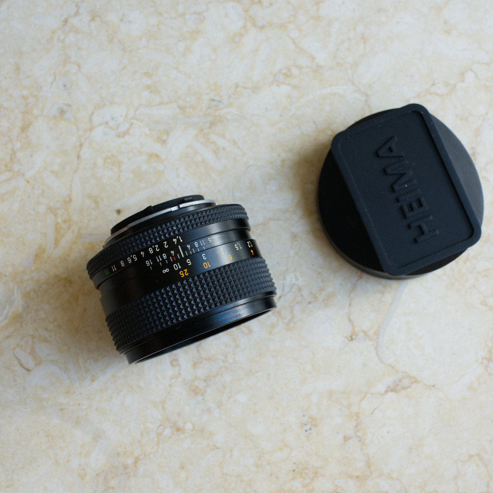

Planar 是 Carl Zeiss 最经典的光学结构之一，而这支为 Contax/Yashica 卡口设计的 Planar T* 50mm F1.4，也是整个 Contax 单反系统中最有代表性的标准镜头之一。
7 片 6 组的光学结构、F1.4 最大光圈、T* 多层镀膜，以及全金属镜身和宽大的手动对焦环，都是那个时代蔡司镜头很典型的特征。50mm 的视角没有明显的广角夸张，也没有长焦的压缩感，对我来说，它一直是一种很自然的观看方式。
这支镜头最初与 Contax RTS 搭配使用。后来通过转接环，我也把它用在 Canon EOS 5D 上。数码机身让老镜头获得了另一种使用方式，但真正让我重新确认自己仍然喜欢它的，还是把它装回 RTS，重新拍摄黑白胶片的时候。
使用感受
如果只用今天评价现代镜头的标准来看，这支 Planar 并不是一支“完美”的 50mm。
F1.4 全开时，它不会给人一种锋利到发硬的感觉；随着光圈收缩，解析力和反差会明显提升。但我喜欢它的地方，恰恰不是单纯的锐度，而是画面从清晰到模糊之间的过渡，以及亮部、暗部和中间调之间比较自然的层次。
这种特点在黑白摄影里尤其明显。
最近重新使用 Contax RTS + Planar 50/1.4 拍摄黑白胶片后，我再次确认了这一点。它并不会刻意制造一种夸张的“老镜头味道”，画面仍然有足够的细节和反差，但灰阶之间的关系很舒服。拍摄白墙、树影、旧建筑、街巷和人物时，这种不生硬的层次感尤其合我的口味。
50mm 也是我一直很习惯的焦段。它不像 35mm 那样容易把大量环境收入画面，而是会迫使我稍微做一点选择：靠近一些，或者舍掉一些。用于街头和日常记录时，这种限制反而让我更专注于画面里真正想留下的东西。
手动对焦当然比现代自动镜头慢，但 Planar 的对焦环行程长、阻尼细腻，在 RTS 明亮的取景器里慢慢把焦点转到准确位置，本身就是拍摄过程的一部分。它和 RTS 放在一起，并不是一套追求速度的组合，却有一种机械操作带来的确定感。
多年以后，我已经用过很多更现代、更锐利也更方便的镜头，但这支 Planar 仍然没有显得多余。
它让我记得，一支镜头的价值并不只是把东西拍清楚，也包括它怎样把光线、层次和距离留在照片里。
Published Work

主要参数
- 镜头： Carl Zeiss Planar T* 50mm F1.4
- 卡口： Contax/Yashica（C/Y）
- 焦距： 50mm（实际光学焦距约 51.8mm）
- 最大光圈： F1.4
- 最小光圈： F16
- 光学结构： 7 片 6 组
- 对焦方式： 手动对焦
- 最近对焦距离： 0.45m
- 最大放大倍率： 约 1:6.7
- 滤镜口径： 55mm
- 镀膜： Carl Zeiss T* 多层镀膜
- 重量： 约 290g